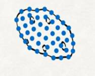
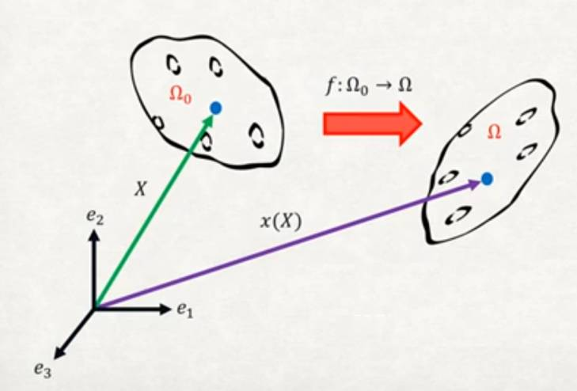
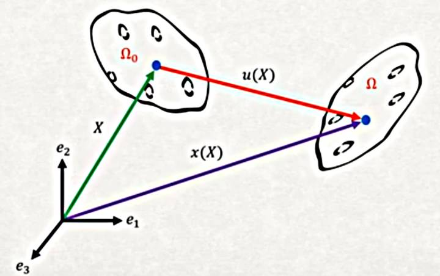
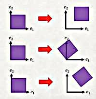
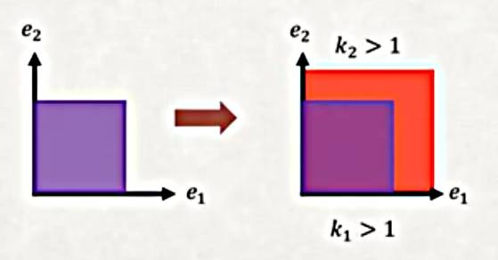
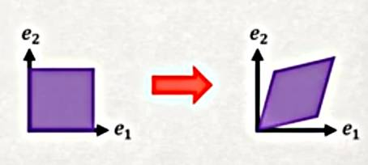
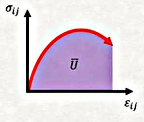
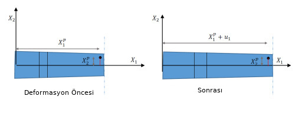
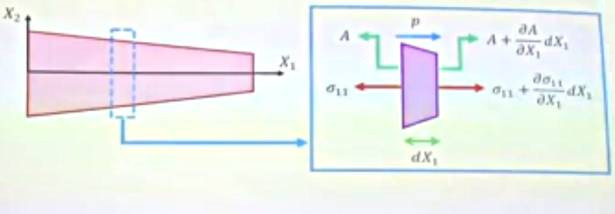
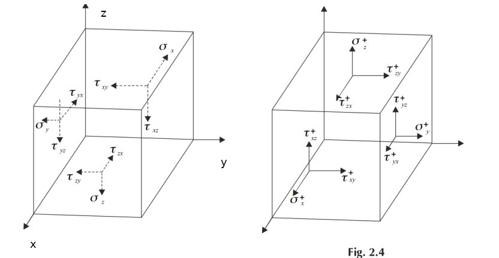

Materyel Mekaniği - Ekstralar
Gerinim Tensörü (Strain Tensor)
Önce nesneleri nasıl temsil ettiğimizden bahsedelim [2]. Diyelim ki elimizde bir patates var. Fakat bu patatesin matematiksel olarak bir anlamı yok. Eğer bu nesneyi $R^3$ uzayında temsil etmek istiyorsak, onun üzerindeki belli seçilmiş noktalar sayesinde bunu yapabiliriz.

Nesne üzerindeki mavi noktalar bu seçilmiş noktaları gösteriyor.
Seçilmiş noktaların kordinatı bir referansa göre alınmalı, $e_1,e_2,e_3$ şeklinde bir baz bu işi yapabilir. Artık bu baza, kordinat sistemine izafi olarak patates üzerindeki her noktayı bir vektör olarak temsil edebiliyoruz. Altta örnek olarak üç tane seçilmiş noktayı gösterdik,

Daha fazla nokta da seçebilirdik, tüm seçilmiş noktalardan gelen vektörlerin kümesi cisim hakkında bize bir konum, durum bilgisi verecektir, bu konuma biçim değiştirme öncesi noktaların konumu $\Omega_0$ diyelim, ya da referans konumu. Nesne üzerindeki değişimler, özellikle bu ders sonlu öğeler (finite elements method, FEM) dersi olduğu için deformasyon değişimleri referans vektörlerinin nasıl değiştiği üzerinden incelenebilir. İlk konumdaki bir vektörü, $X$ diyelim, değişimi $f$ fonksiyonu yapıyor olsun, sonuç vektörü $x$ olacak, yani $x = f(X)$.

Üstteki resimde örnek bir değişim görüyoruz; yana kayma, dönme, uzama var. Değişimi gerçekleştiren $f$ fonksiyonu. Bu ders için farz edilen $f$'nin birebir ve örten (bijective) olduğu, liner cebirden hatırlarsak bu $f$'nin tersi alınabilir olduğu anlamına geliyor, yani elimde deforme edilmiş konum var ise, $f$'nin tersi ile başlangıç konumuna dönebilirim. Diğer bir faraziye fonksiyonun sürekli (continuous), ve pürüzsüz (smooth), yani türevi alınabilir olduğu. Katı cisim mekaniğinde türevi alınabilirlik önemli bir faraziyedir, gerçek hayatta böyle mi, her zaman değil muhakkak, hatta bir bakıma bu sebepten dolayı FEM'e ihtiyacımız var.
Ayrıca bize ileride lazım olabilecek bir üçüncü vektör $u$ da tanımlayabiliriz, bu vektör varılan konumu referans konumuna direk ilintilendiriyor. Vektör $u$'ya yer değişim fonksiyonu denir. Pozisyon fonksiyonu ile karıştırmayalım, o küçük $x$, bu yer değişim fonksiyonu $u$.

Fakat bu tüm grafiğe baktığımızda $u$'nun aslında vektör çıkartma operasyonunu gösterdiğini fark edebiliriz, yani $u = x - X$.
Üç tür katı gövde değişimine bakalım şimdi, not katı demek gövde esneyip, uzamıyor demek.
Katı Gövde Yer Değişimi: $x = X + c$, ki $c$ sabit bir vektör. Pür yer değişimi olduğu için basit bir toplanma işlemi sadece. Şimdi bildiğimiz sonuç konumu formülünü yazarsak, $u = x - X$ bu formülde önceki $x$'i geçirelim, $u = X + c - X$ yani $u = c$.
Katı Gövde Dönüşü: $x = Q X$, formüldeki $Q$ bir dönüş matrisidir. Tekrar yer değişim formülünü yazalım, $u = x - X$ ve önceki $x$'i yerine koyalım, $u = QX - X$, tekrar düzenlersek, $u = (Q-I)X$.
Katı Gövde Hareketi: $x = QX + c$, bu kalem aslında önceki iki kalemin birleşimi, hem dönüş hem de yer değişimi var. Çoğunlukla fizik problemlerinde bu kavramdan bahsedilir. Yine $u$'yu düşünürsek $u = (Q-I)X + c$ elde ederiz.

Bahsedilen değişim türleri üstte resmedildi, yanlız hala gerinim, esneme, küçülme türü şekil değişimlerini görmedik. Diğerleri şunlar,
Her Yönde Uzama ve Küçülme (Uniform Extension and Contraction)
Her kordinat ekseninde uzama var ise, mesela $x_1 = k_1 X_1$, $x_2 = k_2 X_2$, $x_3 = k_3 X_3$, ki $k_i > 0$ reel sayı olmak üzere. Bu değişimleri matris ile şöyle gösterebiliriz,
$$ x = \left[\begin{array}{c} x_1 \\ x_2 \\ x_3 \end{array}\right] = \left[\begin{array}{ccc} k_1 & 0 & 0 \\ 0 & k_2 & 0 \\ 0 & 0 & k_3 \end{array}\right] \left[\begin{array}{c} X_1 \\ X_2 \\ X_3 \end{array}\right] = \left[\begin{array}{c} k_1 X_1 \\ k_2 X_2 \\ k_3 X_3 \end{array}\right] $$
Üstteki ifadeden pozisyon fonksiyonunu şöyle belirtebiliriz,
$$ u = x - X = \left[\begin{array}{ccc} (k_1 - 1) X_1 \\ (k_2 - 1) X_2 \\ (k_3 - 1) X_3 \end{array}\right] $$
İki boyutta eğer hem $k_1$ hem $k_2$ 1'den büyükse her iki eksende esneme görülürdü,

Eğer sadece $k_1 > 1$ ise o yönde büyüme olurdu, diğerinde değil. Eğer $0 < k < 1$ ise küçülme, $k > 1$ ise büyüme, $k = 1$ değişim yok.
$k=0$ ya da $k<0$ fiziki dünyada mümkün değil, mesela $k<0$ durumunda nesnenin tamamen kendi tersine dönmüş olması gerekiyor, bu da fiziksel olarak olamaz.
Basit Kaykılma (Simple Shear)
Üç boyutta $e_2$ etrafında bir kaykılma düşünüyor olsaydık, bunu
$$ x_1 = X_1 + k X_2, \qquad x_2 = X_2, \qquad x_3 = X_3 $$
ile temsil edebilirdik, $\theta$ açısında bir kaykılma için matris formunda
$$ x = \left[\begin{array}{ccc} 1 & \tan(\theta) & 0 \\ 0 & 1 & 0 \\ 0 & 0 & 1 \end{array}\right] \left[\begin{array}{c} X_1 \\ X_2 \\ X_3 \end{array}\right] = \left[\begin{array}{c} X_1 + \tan(\theta) X_2 \\ X_2 \\ X_3 \end{array}\right] $$
$$ \implies u = x - X = \left[\begin{array}{ccc} \tan(\theta) X_2 \\ 0 \\ 0 \end{array}\right] $$

Pür Kaykılma (Pure Shear)
Bu tür şekil değiştirme birden fazla eksen bazında olabilir,
$$ x = \left[\begin{array}{ccc} 1 & \tan(\theta/2) & 0 \\ \tan(\theta/2) & 1 & 0 \\ 0 & 0 & 1 \end{array}\right] \left[\begin{array}{c} X_1 \\ X_2 \\ X_3 \end{array}\right] = \left[\begin{array}{c} X_1 + \tan(\theta/2) X_2 \\ \tan(\theta/2) X_1 + X_2 \\ X_3 \end{array}\right] $$
$$ \implies u = x - X = \left[\begin{array}{ccc} \tan(\theta / 2) X_2 \\ \tan(\theta / 2) X_1 \\ 0 \end{array}\right] $$

Nihayet gerinim konusunda geldik. Bu dersin en önemli konusu bu. Başta gösterdiğimiz patatese dönelim, referans konumundaki bir mavi noktaya $X$'e bakıyorduk, patatesi yamulttuğumuz zaman sonuç konumdaki $x$ elde ediliyordu, her iki noktayı birbiriyle ilintilendiren aralarındaki $u$ vektörü idi.
Şimdi gerinim tensörünü türetmek için patateslere ikinci bir nokta ekleyeceğiz. Referans konumda $X$ noktası ile bu ikinci nokta arasındaki vektör $\mathrm{d} X$ olacak, sonuç patatesindeki ikinci noktaya olan vektör $\mathrm{d} x$. Tabii bu noktaları rasgele eklemedik, yamultan fonksiyon $\mathrm{d} X$'i yamultunca $\mathrm{d} x$ elde ettik, sonuç patatesteki ikinci noktaya böyle eriştik.

Şimdi diyelim ki orijinden ikinci patatesteki $P$ noktasına gitmek istiyoruz. Bir yol $X$, $\mathrm{d} X$, $u(X+\mathrm{d} X)$ olabilirdi, bu vektörlerin toplamı bizi $P$'ye götürür. Fakat daha kısa bir yol daha var, $x$, $\mathrm{d} x$. Aynı noktaya eriştiğimize göre bu iki yolun vektör toplamları birbirine eşit olmalı. O zaman şu ifade doğrudur,
$$ x + \mathrm{d} x = X + \mathrm{d} X + u(X+\mathrm{d} X) $$
Eğer $x$'i sol taraftan sağa geçirirsem, ve biraz düzenleme sonrası,
$$ \mathrm{d} x = \mathrm{d} X + u(X+\mathrm{d} X) - (x - X) $$
Tabii daha önceden hatırlıyoruz ki $u(X) = (x - X)$ o zaman
$$ \mathrm{d} x = \mathrm{d} X + u(X+\mathrm{d} X) - u(X) \qquad (1) $$
Üstteki ifade tanıdık bir kavrama dönüşmeye başladı, eşitliğin sağ tarafı kısmen bir türeve, gradyana benzemiyor mu? Gradyan tanımı,
$$ \nabla u = \frac{u(X+\mathrm{d} X) - u(X)}{\mathrm{d} X} $$
$\nabla u$'ya yer değişim gradyanı deniyor. Bunu (1) ifadesine uydurmak için
$$ \nabla u \mathrm{d} X = u(X+\mathrm{d} X) - u(X) $$
Şimdi (1)'de yerine geçirelim,
$$ \mathrm{d} x = \mathrm{d} X + \nabla u \mathrm{d} X $$
Bir basitleştirme daha,
$$ \mathrm{d} x = (I + \nabla u) \mathrm{d} X \qquad (2) $$
$I + \nabla u$ ifadesine şu şekilde erişmek mümkün, hatırlarsak $x = X + u(X)$ idi. Eğer değişim gradyanı $F$ olarak $F = \partial x / \partial X$, ya da $F_{ij} = \frac{\partial x_i}{\partial X_j}$ tanımlarsak [1, sf. 144],
$$ \frac{\partial (X + u(X))}{\partial X} = 1 + \frac{\partial u}{\partial X} = F $$
$$ F = I + \nabla u $$
Üsttekini (2)'ye sokarsak,
$$ \mathrm{d} x = F \mathrm{d} X $$
elde ederiz.
$F$'ye bakmanın bir diğer yolu $x = \Phi(X,t)$ tanımından hareketle doğal olarak elde edilen
$$ \mathrm{d} x = \frac{\partial x}{\partial X} \mathrm{d} X $$
formülü. Burada $F$ dediğimiz $\mathrm{d} X$ sonsuz ufak büyüklüğü $\mathrm{d} x$'e ceviren şey, açılımı tabii ki $F = \partial x / \partial X$, ya da $F_{ij} = \frac{\partial x_i}{\partial X_j}$. $x$ için farklı bir formül kullanınca mesela $x = X + u(x)$ bu durumda $F$ hesabı bizi $I + \nabla u$'ya götürecektir.
Devam edelim, dersin geri kalanında gerinim konusunu işlerken hep $\mathrm{d} x = F \mathrm{d} X$ formülünü baz alacağız. Niye? Çünkü gerinim bir uzunluk değişimidir ve üstteki formül bana baştaki ufak fark vektörlerinin nasıl uzunluksal olarak değişime uğradığını gösteriyor. Orijinal pozisyondaki değişim $\mathrm{d} X$ biliniyor, buradan değişim sonrasındaki $\mathrm{d} x$'e geçerek o mesafeyi hesaplayabilirim.
Gradyanlar
Deformasyon ve yer değişim gradyanından bahsettik. Yer değişim gradyanı $\nabla u$ bir tensör alan (field) sonucunu verir, çünkü $u$ bir vektör değerli fonksiyondur. Yer değişim (displacement) gradyanı $\nabla u$'nun tam tanımı,
$$ \nabla u = \frac{\partial u_i}{\partial X_j} = \left[\begin{array}{ccc} \dfrac{\partial u_1}{\partial X_1} & \dfrac{\partial u_1}{\partial X_2} & \dfrac{\partial u_1}{\partial X_3} \\ \dfrac{\partial u_2}{\partial X_1} & \dfrac{\partial u_2}{\partial X_2} & \dfrac{\partial u_2}{\partial X_3} \\ \dfrac{\partial u_3}{\partial X_1} & \dfrac{\partial u_3}{\partial X_2} & \dfrac{\partial u_3}{\partial X_3} \end{array}\right] $$
Yamulma / Deformasyon Gradyanı $F$
$F$'nin formülü $F = I + \nabla u$ ise üstteki matristen hareketle bu basit bir hesap,
$$ F = I + \nabla u = \left[\begin{array}{ccc} 1 & 0 & 0 \\ 0 & 1 & 0 \\ 0 & 0 & 1 \end{array}\right] + \left[\begin{array}{ccc} \dfrac{\partial u_1}{\partial X_1} & \dfrac{\partial u_1}{\partial X_2} & \dfrac{\partial u_1}{\partial X_3} \\ \dfrac{\partial u_2}{\partial X_1} & \dfrac{\partial u_2}{\partial X_2} & \dfrac{\partial u_2}{\partial X_3} \\ \dfrac{\partial u_3}{\partial X_1} & \dfrac{\partial u_3}{\partial X_2} & \dfrac{\partial u_3}{\partial X_3} \end{array}\right] $$
Üstteki toplam aslında alttaki kısmi türev matrisine eşittir,
$$ F = \left[\begin{array}{ccc} \dfrac{\partial x_1}{\partial X_1} & \dfrac{\partial x_1}{\partial X_2} & \dfrac{\partial x_1}{\partial X_3} \\ \dfrac{\partial x_2}{\partial X_1} & \dfrac{\partial x_2}{\partial X_2} & \dfrac{\partial x_2}{\partial X_3} \\ \dfrac{\partial x_3}{\partial X_1} & \dfrac{\partial x_3}{\partial X_2} & \dfrac{\partial x_3}{\partial X_3} \end{array}\right] = \frac{\partial x_i}{\partial X_j} $$
Yani elde ettiğimiz pozisyon fonksiyonunun gradyanıdır. Nihai olarak eşitliği $\nabla u = F - I$ olarak ta gösterebilirdik, yani,
$$ \nabla u = \left[\begin{array}{ccc} \dfrac{\partial u_1}{\partial X_1} & \dfrac{\partial u_1}{\partial X_2} & \dfrac{\partial u_1}{\partial X_3} \\ \dfrac{\partial u_2}{\partial X_1} & \dfrac{\partial u_2}{\partial X_2} & \dfrac{\partial u_2}{\partial X_3} \\ \dfrac{\partial u_3}{\partial X_1} & \dfrac{\partial u_3}{\partial X_2} & \dfrac{\partial u_3}{\partial X_3} \end{array}\right] = \left[\begin{array}{ccc} \dfrac{\partial x_1}{\partial X_1} & \dfrac{\partial x_1}{\partial X_2} & \dfrac{\partial x_1}{\partial X_3} \\ \dfrac{\partial x_2}{\partial X_1} & \dfrac{\partial x_2}{\partial X_2} & \dfrac{\partial x_2}{\partial X_3} \\ \dfrac{\partial x_3}{\partial X_1} & \dfrac{\partial x_3}{\partial X_2} & \dfrac{\partial x_3}{\partial X_3} \end{array}\right] - \left[\begin{array}{ccc} 1 & 0 & 0 \\ 0 & 1 & 0 \\ 0 & 0 & 1 \end{array}\right] $$
Şimdi Lagrange (Green) tensörüne gelelim.
Gerinim, yamulma sonucu uzunluk değişimidir. $\mathrm{d} x = F \mathrm{d} X$ formülü vektörler arası değişimi gösteriyor, formülü vektör uzunluğu (norm) kullanacak şekilde değişterebiliriz. Eşitliğin iki tarafını kendisi ile noktasal çarpıma tabi tutarım, böylece her iki tarafta norm elde ederim,
$$ \mathrm{d} x \cdot \mathrm{d} x = (F \mathrm{d} X) \cdot (F \mathrm{d} X) $$
$$ ||\mathrm{d} x||^2 = \mathrm{d} X \cdot (F^T F) \mathrm{d} X $$
Son eşitlik ortaya çıktı çünkü bir $Ax$ örneği üzerinden bakarsak,
$$ Ax \cdot Ax = (Ax)^T Ax = x^T A^T (Ax) = x^T (A^T A) x = x \cdot (A^T A) x $$
Ana konumuza dönersek, iki üstteki $F^T F$ grubuna $C$ diyelim, bu büyüklük Sağ Cauchy-Green Yamulma Tensörü (Right Cauchy-Green Deformation Tensor) olarak biliniyor.
Bir zihin egzersizi yapalım, eğer $C = F^T F = I$ yani $C$ birim matristir dersem ne olur? O zaman
$$ ||\mathrm{d} x||^2 = \mathrm{d} X \cdot I \mathrm{d} X = \mathrm{d} X \cdot \mathrm{d} X $$
$$ ||\mathrm{d} x||^2 = ||\mathrm{d} X||^2 $$
Bu bize uzunlukları değişmediği bir ortamı gösteriyor, demek ki elimizde bir katı-gövde hareketi (rigid-body motion) bulunuyor. Gövdede hiç esneme, gerinim, uzama yok, obje şeklen olduğu gibi kalıyor.
Normal şartlarda $F = (I+\nabla u)$ ve $F^T F$ birim matris değil, bu durumda tüm $C$'yi açarsak,
$$ C = F^T F = (I+\nabla u)^T (I+\nabla u) = I + \nabla u + \nabla u^T + \nabla u^T \nabla u $$
Katı-gövde için $C = I$ demiştik, üstteki son ifadede $C = I + ...$ gibi bir açılım var, nokta nokta olan yerler tabii ki diğer semboller. Ama tekrar katı-gövde durumunu düşünürsek, o durumda $C = I$ olacağı için üstteki formülde $I$ sonrası gelen,
$$ .. + \nabla u + \nabla u^T + \nabla u^T \nabla u $$
terimleri tamamen sıfır demektir.
Şimdi Cauchy-Green tensörünü tekrar tanımlayalım,
$$ C = I + 2 \epsilon_{Green} $$
öyle ki
$$ \epsilon_{Green} = \frac{1}{2} (\nabla u + \nabla u^T + \nabla u^T \nabla u ) \qquad (3) $$
Not: $C$ içinde 2 ile çarpım var $\epsilon_{Green}$ içinde 1/2 bunlar birbirini iptal eder ama 1/2 kullanımı karesel formlarda yaygın şekilde kullanılır, basitleştirici bir amacı var muhakkak.
Böylece Green Gerinim Tensörünü tanımlamış olduk.
Tensörün bizim için faydalı bazı özellikleri var.
1) Simetrik: Bu özellik hesapları rahatlaştırır, özellikle yaklaşık hesaplara gelince simetrinin faydalarını göreceğiz.
2) Sonlu (finite) yamulmalar için geçerli: Tensör hesabı için $\nabla u$ kullanılır, onun için de yer değişim fonksiyonu yeterlidir. Bunlar varsa geçerli bir formül eldedir.
Sonsuz Küçük Gerinim Tensörü (Infinitesimal Strain Tensor)
Green gerinim tensörünü gördük, kuvvetli bir yaklaşım ama bizim daha çok kullanacağımız şimdi anlatacağımız. Niye? Çünkü Green tensörü sonlu deformasyonlar / yamulmalar için geçerli ama çoğu uygulamada bize lazım olan çok ufak yamulmalar. Ufak derken, önceki dersteki (3) formülünden hareketle, oradaki en son terimi hatırlarsak, çok ufak yamulmalar için $\nabla u^T \nabla u << \nabla u$ olur, yani ufak değişimlerde o karesel işlem $\nabla u$'dan daha ufak sonuç verir. O zaman belli durumlarda son terim yaklaşık sıfır kabul edilebilir, $\nabla u^T \nabla u \approx 0$. Green tensörü bu durumlarda yaklaşık olarak alttaki gibi olur,
$$ \epsilon_{Green} \approx \frac{1}{2} (\nabla u + \nabla u^T ) $$
Tüm öğeleri gözükecek şekilde [3, 4.3.2.2],
$$ \left[\begin{array}{ccc} \frac{\partial u_1}{\partial X_1} & \frac{1}{2}(\frac{\partial u_1}{\partial X_2} + \frac{\partial u_2}{\partial X_1} ) & \frac{1}{2}(\frac{\partial u_1}{\partial X_3} + \frac{\partial u_3}{\partial X_1} ) \\ \frac{1}{2}(\frac{\partial u_1}{\partial X_2} + \frac{\partial u_2}{\partial X_1} ) & \frac{\partial u_2}{\partial X_2} & \frac{1}{2}(\frac{\partial u_2}{\partial X_3} + \frac{\partial u_3}{\partial X_2} ) \\ \frac{1}{2}(\frac{\partial u_1}{\partial X_3} + \frac{\partial u_3}{\partial X_1} ) & \frac{1}{2}(\frac{\partial u_2}{\partial X_3} + \frac{\partial u_3}{\partial X_2} ) & \frac{\partial u_3}{\partial X_3} \end{array}\right] $$
Bileşen formunda
$$ \epsilon_{ij} = \frac{1}{2}\left( \frac{\partial u_i}{\partial X_j} + \frac{\partial u_j}{\partial X_i} \right) $$
Bu tensör de simetrik, fakat sadece ufak şekil değişimleri, yamulmalar için geçerli. Fakat zaten, mesela inşaat mühendisliği durumunda, binalar, demir kirişler (beam) ile iş yaptığımız zaman, bu tür şekil değişimi faraziyesi yeterli. Çünkü eh, biraz düşünürsek eğer binamız büyük şekil değişimleri yaşıyorsa önümüzde daha büyük bir problem var demektir.
Potansiyel Enerji ve Denge
İlk önce denge bağlamında potansiyel enerjinin ne demek olduğunu işleyelim.
Potansiyel enerji $\Pi$ sistemin stabilitesi ile alakalıdır. Mesela alttaki resim stabilite konusunu işleyen her ders kitabında vardır, bir kapta duran topu aldım, yukarı doğru çıkatıp (bordo renk) aşağı bıraktım, top kabın dibine gidip orada kalacaktır (kırmızı renk).

Yani top ilk denge konumuna dönecektir, ve o durumda potansiyel enerjisi minimum olmuştur deriz ve bu denge stabil bir dengedir.
İkinci durumda topu orta noktada sola taşırız, top orada kalır, bu yeni bir denge noktasıdır, $\Pi$ değişmemiştir, burada nötr bir denge vardır.

Üçüncü durumda ters kavisli bir yüzey var, top üst orta noktadan başlıyor diyelim (orada durması zor olsa da), topu yine alıp sola taşıyorum, top aşağı düşecektir. Üstteki durum potansiyel enerjisinin maksimum olduğu bir durumdur, sistem stabil değildir. Rayleigh-Ritz yönteminin amacı (potansiyel enerjinin minimum olduğu) stabil denge durumunu hedefleyerek bir yaklaşık çözüme ulaşmaktır.
Bunu nasıl yaparız? Daha önce belirttiğimiz potansiyel enerjinin iki bileşeni var, ilki sistemin toplam iç gerilim (deformasyon) enerjisi. Gerilim enerji yoğunluğu $\overline{U}$ genel olarak bir materyelin stres-gerilim eğrisinin altındaki alan olarak hesaplanabilir.

Mesela üstteki gibi stres $\sigma_{ij}$ ve gerilim $\epsilon_{ij}$ arasındaki bir eğriyi düşünelim, bu eğrinin altında kalan alan, yani entegral hesabı gerilim enerji yoğunluğunu verir.
$$ \overline{U} = \int_{0}^{\epsilon_{ij}} \sigma_{ij} \mathrm{d} \epsilon_{ij} $$
Kolaylaştırıcı bir faktör, bizim bu derste kullanacağımız maddeler lineer elastik, yani stres-gerilim eğrisi alttaki gibi,

Bu durumda "eğri" yani çizgi altındaki alan basit bir üçgen hesabı,
$$ \overline{U} = \frac{1}{2} \sigma_{ij} \epsilon_{ij} $$
Fakat bu sadece tek bir boyutu halletti, mesela üstteki örnek $e_1$ yönündeki bir esnemeyi temsil ediyor olabilirdi, fakat 3 boyutlu ortamda elimizde daha fazla bileşen olduğunu biliyoruz, $\sigma_{11}$ haricinde $\sigma_{22}$ var, $\sigma_{33}$ var, $\sigma_{12}$, $\sigma_{23}$, vs.. Tüm stres/gerilim eşleri için [5, Ders 16],
$$ \overline{U} = \frac{1}{2} \sum_{i,j=1}^{3} \sigma_{ij} \epsilon_{ij} $$
Toplamı açarsak,
$$ = \frac{1}{2} (\sigma_{11}\epsilon_{11} + \sigma_{22}\epsilon_{22} + \sigma_{33}\epsilon_{33} + \sigma_{12}\epsilon_{12} + \sigma_{23}\epsilon_{23} + \sigma_{13}\epsilon_{13} + \sigma_{33}\epsilon_{33} + \sigma_{23}\epsilon_{23} + \sigma_{32}\epsilon_{32} ) $$
Son ifadeyi daha basitleştirmek mümkün, $\sigma$ ve $\epsilon$'un simetrik olduğunu unutmayalım,
$$ \overline{U} = \frac{1}{2} (\sigma_{11}\epsilon_{11} + \sigma_{22}\epsilon_{22} + \sigma_{33}\epsilon_{33} + 2 \sigma_{12}\epsilon_{12} + 2 \sigma_{13}\epsilon_{13} + 2 \sigma_{23}\epsilon_{23} ) $$
Üsttekileri mühendislik gerilimi $\gamma_{ij} = 2 \epsilon_{ij}$ ile temsil etmek mümkün,
$$ \overline{U} = \frac{1}{2} (\sigma_{11}\epsilon_{11} + \sigma_{22}\epsilon_{22} + \sigma_{33}\epsilon_{33} + \sigma_{12}\gamma_{12} + \sigma_{13}\gamma_{13} + \sigma_{23}\gamma_{23} ) $$
Eksenel Yükleme (Axial Loading)
Euler-Bernoulli kiriş formülasyonu sadece bükülmenin sebep olduğu deformasyonu hesaba kattı, bunu yaparken nötr eksen üzerindeki eksenel deformasyonu yok saydı [3, 8.4]. Euler-Bernoulli modelini eksenel yatay deformasyonu hesaba katacak şekilde genişletmek mümkündür, fakat, belki de bu iyi haber, ufak deformasyon önkabulü sayesinde eksenel yük ve bükülme deformasyonları birbirinden bağlantısız (uncoupled) hale gelir, eksenel yük sadece eksenel deformasyonu, yatay yük sadece yatay deformasyonu etkiler.

Diğer faraziyeler Euler-Bernoulli modeline benzer, düzlem bölümler düzlem kalır, Poisson oranı etkileri yok sayılır, ve yatay yer değişimi $u_1$ pürüzsüz bir fonksiyondur. Farklı bir resmi [6, Ders 15] eklersek,

Bu faraziyelerle modeli oluşturalım; üstteki resme bakarsak $u_1 = u_1(X_1)$, ve pozisyon vektör fonksiyonu olarak,
$$ x = \left[\begin{array}{c} X_1 + u_1 \\ X_2 \\ X_3 \end{array}\right] $$
Bu durumda yer değişim fonksiyonu
$$ u = x - X = \left[\begin{array}{c} u_1 \\ 0 \\ 0 \end{array}\right] $$
Hatırlarsak yaklaşık olarak gerilim tensörü
$$ \epsilon = \frac{1}{2} (\nabla u + \nabla u^T ) $$
Gradyanlar ile hesabı yaparsak sadece $\epsilon_{11}$'in sıfır olmadığını görüyoruz,
$$ \epsilon = \left[\begin{array}{ccc} \frac{\mathrm{d} u_1}{\mathrm{d} X_1} & 0 & 0 \\ 0 & 0 & 0 \\ 0 & 0 & 0 \end{array}\right] \qquad (1) $$
Bize gerekli diferansiyel denklemi kuvvet dengelerine bakarak ortaya çıkartabiliriz. Şimdi kirişin $\mathrm{d} X_1$ genişliğindeki ufak bir parçasına odaklanalım,

Bu parçanın sol ve sağındaki kuvvetlere bakarsak üstteki resim ortaya çıkar.
Oklar sola ya da sağa doğru gösterildi çünkü mesela $\sigma_{11}$ ve $\sigma_{11} + \frac{\partial \sigma_{11}}{\partial X_1} \mathrm{d} X_1$'in birbirini dengeleyeceklerini / birbirlerine karşı ortaya çıktıklarını biliyoruz, sağa doğru olan $p$ zaten dışarıdan uygulanan eksenel kuvvet. $\frac{\partial \sigma_{11}}{\partial X_1}$ kullanımı $\sigma_{11}$'in $X_1$'e oranla değişim hesabı için kullanıldı, bu oranı $X_1$'deki olan değişimle çarpınca (örnekte $\mathrm{d} X_1$) tabii ki ufak parçanın sağındaki $\sigma_{11}$ eki ortaya çıkıyor, bunu $\sigma_{11}$'e topluyoruz.
Parçanın sol ve sağındaki alan büyüklüğü benzer şekilde, solda $A$ varsa $A$'nin $X_1$'e oranlı değişimi çarpı $X_1$ değişimi bize parçanın sağındaki alan büyüklük ekini veriyor.
$X_1$ ekseni bazındaki denge denklemi o zaman alttaki gibi olur, stres hesabı kuvvet bölü birim alan olduğu için kuvveti elde etmek için stres çarpı alan gerekeceğini hatırlayalım, ayrıca $p$ kuvveti birim $X_1$ bazlı alınıyor, o zaman $p \mathrm{d} X_1$ kullanmak gerekir,
$$ \sum F_{X_1} = - \sigma_{11} A + \left( \sigma_{11} + \frac{\partial \sigma_{11}}{\partial X_1} \mathrm{d} X_1 \right) \left( A + \frac{\partial A}{\partial X_1} \mathrm{d} X_1 \right) + p \mathrm{d} X_1 = 0 $$
Formülü açarsak
$$ -\sigma_{11} A + \sigma_{11} A + \sigma_{11} \frac{\partial A}{\partial X_1} \mathrm{d} X_1 + A \frac{\partial \sigma_{11}}{\partial X_1} \mathrm{d} X_1 + \frac{\partial A}{\partial X_1} \frac{\partial \sigma_{11}}{\partial X_1} \mathrm{d} X_1^2 + p \mathrm{d} X_1 = 0 $$
$\sigma_{11} A$ terimleri iptal olur,
$$ \sigma_{11} \frac{\partial A}{\partial X_1} \mathrm{d} X_1 + A \frac{\partial \sigma_{11}}{\partial X_1} \mathrm{d} X_1 + \frac{\partial A}{\partial X_1} \frac{\partial \sigma_{11}}{\partial X_1} \mathrm{d} X_1^2 + p \mathrm{d} X_1 = 0 $$
$\mathrm{d} X_1$ dışarı çekilir, ve sağda sıfır olduğu için iptal edilebilir,
$$ \sigma_{11} \frac{\partial A}{\partial X_1} + A \frac{\partial \sigma_{11}}{\partial X_1} + \frac{\partial A}{\partial X_1} \frac{\partial \sigma_{11}}{\partial X_1} \mathrm{d} X_1 + p = 0 $$
Hala basitleştirme mümkün, dikkat edersek $\mathrm{d} X_1$ terimini kullandık ve ona "çok küçük bir parça" dedik. Bu parçayı sonsuz küçültürsek, yani limiti alırsak, ki $\mathrm{d} X \to 0$, o zaman üstteki formülde üçüncü terim yokolur,
$$
\sigma_{11} \frac{\partial A}{\partial X_1} +
A \frac{\partial \sigma_{11}}{\partial X_1}
p = 0
$$
Daha kısa bir formüle ulaştık. Fakat bize lazım olan yer değişimi, üstteki formülde bu yok. Oraya ulaşmaya çalışalım. Dikkat edersek üstteki formülde ilk iki terim sanki Calculus'ta çarpım kuralının açılmış haline benziyor, o zaman o kuralı ters yönde işletirsek, yani gruplama amaçlı geriye gidersek,
$$ \frac{\partial }{\partial X_1} (\sigma_{11} A ) + p = 0 $$
Şimdi $\sigma_{11} = E \epsilon_{11}$ formülünü hatırlayalım, bu nereden geldi? Elimizde bir tekeksenel yük var, o zaman en baz stres-gerilme ilişkisi geçerli olur, yerine koyarsak,
$$ \frac{\partial }{\partial X_1} (E \epsilon_{11} A ) + p = 0 $$
Peki $\epsilon_{11}$ nedir? Bu büyüklüğü (1)'de gördük, $\epsilon$'un tek sıfır olmayan öğesi $\epsilon_{11}$ ve orada $\frac{\mathrm{d} u_1}{\mathrm{d} X_1}$ değeri var. Bunu üstteki formüle koyalım,
$$ \frac{\partial }{\partial X_1} \left( E A \frac{\mathrm{d} u_1}{\mathrm{d} X_1} \right) + p = 0 $$
Böylece içinde yer değişimi içeren bir formül elde etmiş oldum, $u_1$ yer değişimidir.
Bu denklemi artık çözüm için kullanabiliriz. Tasarımcı olarak biz Young'in Genliği $E$'yi biliriz, kirişin herhangi bir noktasındaki satıhsal alan $A$'yi biliriz, kirişe uygulanan yük $p$'yi biliriz, tüm bunları kullanarak yer değişim $u_1$'i üstteki formülle bulabiliriz. Tek bilinmeyen $u_1$ çünkü.
Şimdi bu noktada bazı püf noktalar ortaya çıkıyor; çünkü eğer $E,A$ büyüklükleri $X_1$'in fonksiyonu iseler çözüm daha karmaşık hale gelebilir çünkü üstteki formülde dış türev $X_1$'e göre. Fakat şimdiye kadar bu derste $X_1$'e bağlı bir $E$ görmedik, yani Young'in Genliği kirişin her noktasında aynı, özetle sabit. Sabit ise $E$ diferansiyelin dışına alınabilir. $A$ aynı şekilde. Eğer $A$ değişken ise o zaman Calculus çarpım kuralı uygularız.
O zaman iki senaryo şöyle olabilir, $E$ sabit ama $A$ değil,
$$ E \frac{\partial A}{\partial X_1} \frac{\partial u_1}{\partial X_1} + EA \frac{\partial^2 u_1}{\partial X_1} + p = 0 $$
Hem $E$ hem $A$ sabit,
$$ E A \frac{\partial^2 u_1}{\partial X_1} + p = 0 $$
Elastiklik Denge Denklemleri
Gerinme (yer değişim) ve stres arasındaki ilişki gösterildi, şimdi tüm kuvvetlerin arasındaki denge denklemlerine bakalım. Eğer dışarıdan her eksen üzerinde, X, Y, Z kuvvetleri uygulansa, ya da uygulanmasa bile, mevcut direk stresler $\sigma$ ve yüzeylere paralel giden kaykılma stresleri $\tau$ arasındaki denge ilişkisi ne olurdu?
Önce idealize edilmiş her kenarı ufak $\mathrm{d} x$, $\mathrm{d} y$, $\mathrm{d} z$ boyutlarında olan bir küp düşünelim [9, sf. 11], küpün kenarlarına $X,Y,Z$ kuvvetleri uygulanıyor.

Bu kuvvetlerin ortaya çıkardığı direk ve kaykılma stresleri alttaki gibi gösterilebilir.

Küpün kordinat eksenlerine paralel olan yüzü nötr diğerleri "artı yüzleri" olarak simgelendirildi, mesela üst sağdaki resimde okuyucuya yakın olan yüzden dışarı doğru çıkan stres $\sigma_x^+$ sembolü, aynı yüzdeki kaykılma stresleri benzer şekilde artı işaretini alıyor, $x$ eksenine doğru / dik oldukları için ilk altsembolleri $x$, paralel ilerledikleri eksen ikinci alt sembol, mesela sağ yönünü gösteren kaykılma stresi $\tau_{xy}^+$. Artı yüzün tam karşısındaki direk stres $\sigma_x$, onda artı işareti yok.
Eğer bir denge formülü bulmak istiyorsak her yüz için bu eşitlikleri ayrı ayrı kurabiliriz. Mesela $x$ ekseni ile başlayalım, iki stresten bahsettik zaten, $\sigma_x^+$ ve $\sigma_x$. Fakat bu yönde yani $x$ ekseni boyunca etki eden stresler sadece onlar değil, bu yönde olan kaykılma stresleri de var. İşaret edilen yön ikinci altsembol demiştik, orada $x$ diyen tüm kaykılma streslerini kolayca bulabiliriz, $\tau_{yx}$, $\tau_{zx}$, $\tau_{yx}^+$, $\tau_{zx}^+$.
Denge formülünden önce artı yüzleri hakkında bir ek bilgi daha verelim, bu yüzlerin stresini karşısındaki stresi baz alarak formülize edebiliriz, yani $\sigma_x^+$ formülü $\sigma_x$ bazlı gösterilebilir, bunu kısmı türev ile yaparız,
$$ \sigma_x^+ = \sigma_x + \frac{\partial \sigma_x}{\partial x} \mathrm{d} x $$
Türev bağlamında üstteki akla yatkın olmalı, $\partial \sigma_x / \partial x$ bir değişim oranınıdır, onu ufak değişim miktarı $\mathrm{d} x$ ile çarpıp $\sigma_x$'e eklersek $\sigma_x^+$ elde edebiliriz. Benzer mantığı tüm artı yüzlerdeki stresler için kullanabiliriz.
Bir ek konu daha, stres daha önce belirtiğimiz gibi kuvvet / alan hesabıdır, fakat denge formülü kuvvetler üzerinden yapılacak o zaman bildiğimiz, bulduğumuz her stres büyüklüğünü onun etki ettiği alan ile çarpmamız gerekir, ki böylece kuvvet elde edelim ve bu kuvvetleri toplayarak sıfır eşitleyip denge formülünü bulalım. Yine $x$ örneği, $\sigma_x$'in etki ettiği alan $\mathrm{d} y \mathrm{d} z$ alanıdır.
Devam edelim, $x$ ile başlayalım, o yöndeki denge için $x$ yönündeki tüm kuvvetleri toplamak gerekir, artı yüzdeki kuvveti pozitif yapacağız (bunu hatırlaması kolay), tersini gösteren kuvvet ise negatif olacak, $X$ gövdeye uygulanan birim hacimdeki dış kuvvettir, o zaman tüm $x$ toplamı
$$ \sigma_x^+ \mathrm{d} y \mathrm{d} z - \sigma_x \mathrm{d} y \mathrm{d} z + \tau_{yx}^+ \mathrm{d} x \mathrm{d} z - \tau_{yx} \mathrm{d} x \mathrm{d} z + \tau_{zx}^+ \mathrm{d} x \mathrm{d} y - $$ $$ \tau_{zx} \mathrm{d} x \mathrm{d} y + X \mathrm{d} x \mathrm{d} y \mathrm{d} z = 0 $$
Artı yüzlerdeki stresleri diğer yüz bağlamında temsil edebiliriz demiştik, bunu yapalım,
$$ (\sigma_x + \dfrac{\partial \sigma_x}{\partial x} \mathrm{d} x )\mathrm{d} y \mathrm{d} z - \sigma_x \mathrm{d} y \mathrm{d} z + (\tau_{yx} + \dfrac{\partial \tau_{yx}}{\partial y} \mathrm{d} y ) \mathrm{d} x \mathrm{d} z - \tau_{yx} \mathrm{d} x \mathrm{d} z + $$ $$ (\tau_{zx} + \dfrac{\partial \tau_{zx}}{\partial z} \mathrm{d} z ) \mathrm{d} x \mathrm{d} y - \tau_{zx} \mathrm{d} x \mathrm{d} y + X \mathrm{d} x \mathrm{d} y \mathrm{d} z = 0 $$
Basitleştirip her şeyi $\mathrm{d} x \mathrm{d} y \mathrm{d} z$ ile bölersek,
$$ \frac{\partial \sigma_x}{\partial x} + \frac{\partial \tau_{yx}}{\partial y} + \frac{\partial \tau_{zx}}{\partial z} + X = 0 $$
Benzer hesabı $y$, $z$ icin yaparsak,
$$ \frac{\partial \tau_{xy}}{\partial x} + \frac{\partial \sigma_y}{\partial y} + \frac{\partial \tau_{zy}}{\partial z} + Y = 0 $$
$$ \frac{\partial \tau_{xz}}{\partial x} + \frac{\partial \tau_{yz}}{\partial y} + \frac{\partial \sigma_z}{\partial z} + Z = 0 $$
İki Boyutta Elastiklik Denklemleri
İki boyut için üstteki üç denklemin $z$ yönünde hiçbir stres olmayan halini düşünebiliriz, üçüncü denklem tamamen yokolur, kalanlardan
$$ \frac{\partial \sigma_x}{\partial x} + \frac{\partial \tau_{yx}}{\partial y} + \cancel{\frac{\partial \tau_{zx}}{\partial z}} + X = 0 $$
$$ \frac{\partial \tau_{xy}}{\partial x} + \frac{\partial \sigma_y}{\partial y} + \cancel{\frac{\partial \tau_{zy}}{\partial z}} + Y = 0 $$
Yani [10, sf. 331]
$$ \frac{\partial \sigma_x}{\partial x} + \frac{\partial \tau_{yx}}{\partial y} + X = 0 $$
$$ \frac{\partial \tau_{xy}}{\partial x} + \frac{\partial \sigma_y}{\partial y} + Y = 0 $$
Kaynaklar
[1] Kim, Introduction to Non-linear Finite Element Analysis
[2] Petitt, Intro to the Finite Element Method, University of Alberta, https://www.youtube.com/watch?v=2iUnfPRk6Ro&list=PLLSzlda_AXa3yQEJAb5JcmsVDy9i9K_fi
[3] Adeeb, Introduction to Solid Mechanics, Online Book, https://engcourses-uofa.ca/books/introduction-to-solid-mechanics/
[4] Crandall, An Introduction to the Mechanics of Solids
[5] Petitt, Intro to the Continuum Mechanics, University of Alberta, https://www.youtube.com/playlist?list=PLLSzlda_AXa3N5jaDART7kimBlYz1dFnX
[6] Petitt, Intro to the Continuum Mechanics, University of Alberta, https://www.youtube.com/playlist?list=PLLSzlda_AXa3N5jaDART7kimBlYz1dFnX
[6] Logan, A First Course in the FEM, 5th Ed
[8] Khennane, Introduction to Finite Element Analysis using Matlab and Abaqus
[9] Bhavikatti, Finite Element Analysis
[10] Pepper, The Finite Element Method
Yukarı